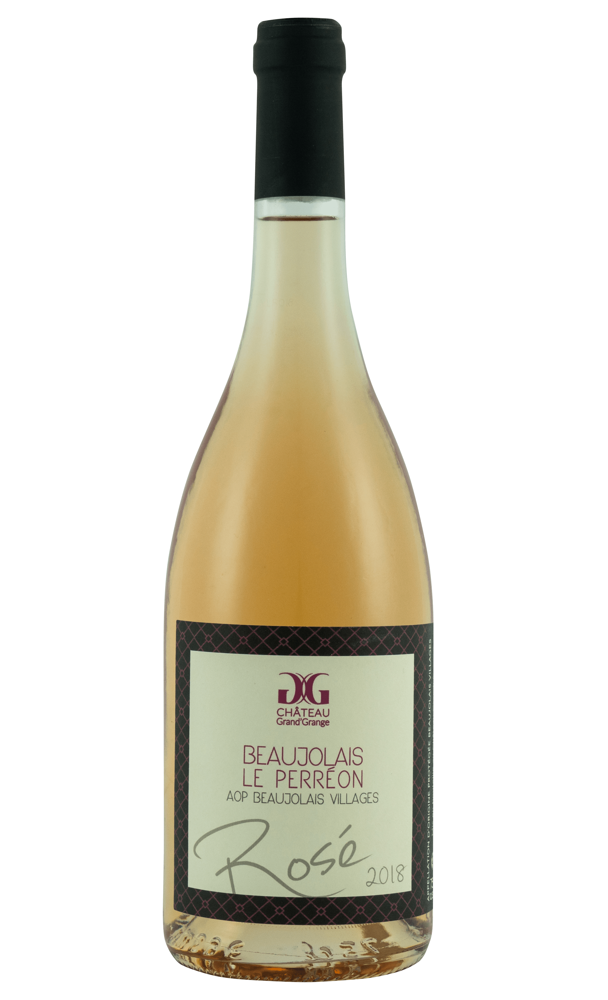

Rosé
Beaujolais Villages AOP
Rosé
Our Gamay-based rosé possesses a fresh aroma of red berries, such as gooseberry and raspberry, with a hint of citrus (grapefruit). This wine may be served as an aperatif or can be a fine accompaniment to grilled meats and crudités. The wine is best enjoyed while it is young.
- Variety: Chardonnay
- Aging: 50% tank, 50% barrels
- Production: 2,000 - 3,000 bottles
- Storage: 1 - 2 years
